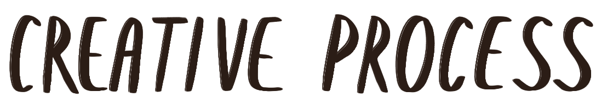
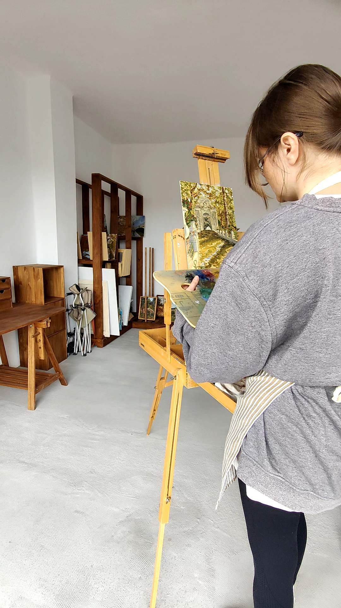

From life
My process begins outside the studio. Working outdoors allows me to capture real light, the atmosphere of the place, and the immediate energy of the surroundings. In front of the easel, I record the first strokes, direct color, and the essential structure of the scene.

The studio
Back in the studio, the pace shifts. It is the space for pause, reflection, and technical development. In the studio, I resume the work started outdoors to refine the composition, work the matter and layers with more calm, until reaching the definitive balance of the piece.